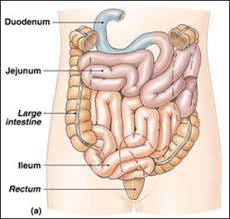

Usus Halus
Usus halus terdiri atas tiga bagian, yaitu duodenum (usus dua belas jari), jejunum, dan ileum (usus penyerapan). Bagian pertama dari usus halus adalah usus duodenum (dua belas jari) yang melengkung seperti ladam. Panjangnya kira-kira 30 cm. Pada duodenum bermuara dua saluran, yaitu dari pankreas dan kantung empedu sehingga terjadi proses pencernaan secara kimiawi.

Di dalam jejunum makanan mengalami pencernaan secara kimiawi oleh enzim yang dihasilkan oleh usus halus. Enzim-enzim tersebut adalah:
Enterokinase, berfungsi mengaktifkan tripsinogen yang dihasilkan pankreas.
Laktase, berfungsi mengubah laktosa menjadi glukosa.
Erepsin atau dipeptidase, berfungsi mengubah dipeptida atau pepton menjadi asam amino.
Maltase, berfungsi mengubah maltosa menjadi glukosa.
Disakarase, berfungsi mengubah disakarida menjadi monosakarida.
Peptidase, berfungsi mengubah polipeptida menjadi asam amino.
Sukrase, berfungsi mengubah sukrosa menjadi glukosa dan fruktosa.
Lipase, berfungsi mengubah trigliserida menjadi gliserol dan asam lemak.
Di dalam ileum banyak terdapat jonjot usus yang berfungsi untuk memperluas permukaan usus halus sehingga proses penyerapan makanan akan menjadi lebih sempurna. Zat makanan berupa glukosa, asam amino, vitamin, mineral, dan air setelah diserap oleh usus halus akan dibawa oleh darah melalui pembuluh vena porta hepatika ke hati. Selanjutnya dari hati ke jantung kemudian diedarkan ke seluruh tubuh.
Asam lemak dan gliserol bersama empedu membentuk suatu larutan yang disebut misel. Selanjutnya asam lemak dan gliserol dibawa oleh pembuluh getah bening ( pembuluh kil) dan akhirnya masuk ke dalam peredaran darah. Garam empedu yang masuk ke darah menuju ke hati dibuat empedu
kembali.
Vitamin yang larut dalam lemak (A, D, E, K) diserap oleh usus halus dan diangkut melalui pembuluh getah bening. Selanjutnya vitamin-vitamin tersebut masuk ke peredaran darah.
Umumnya sari makanan diserap saat mencapai akhir usus halus. Sisa makanan yang tidak diserap, secara perlahan-lahan bergerak ke usus besar. Seluruh usus halus panjangnya beberapa meter. Ujungnya bermuara ke dalam sisi usus besar sehingga terbentuk usus buntu, yaitu suatu bagian pendek usus besar yang buntu.